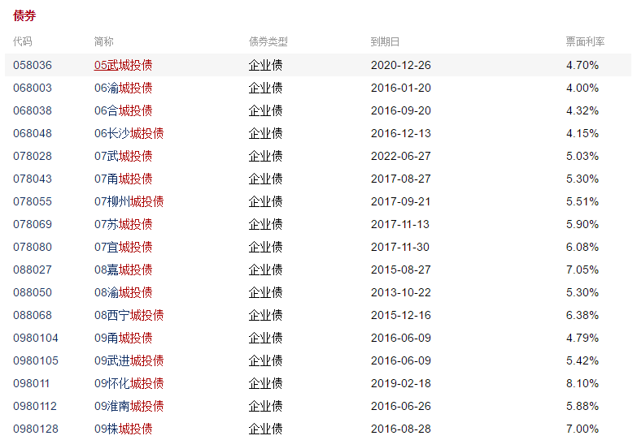
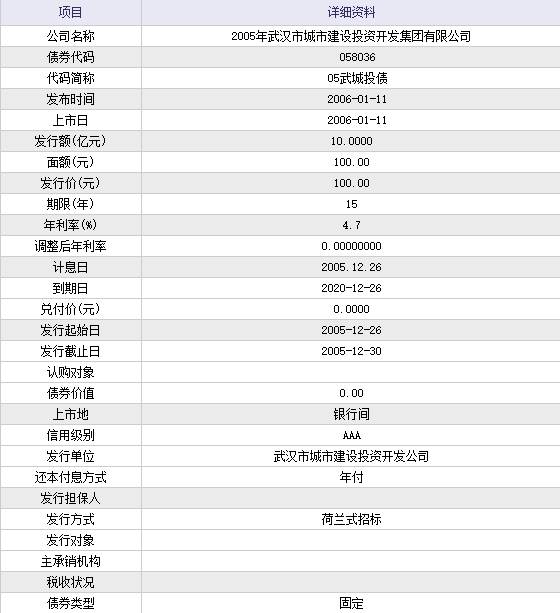
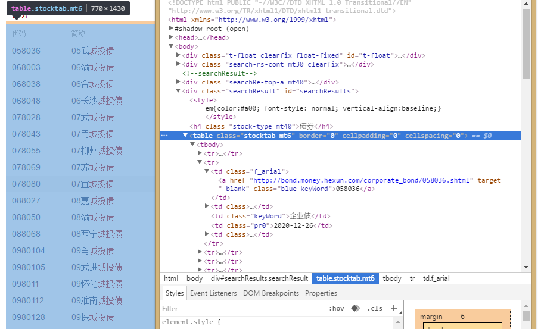
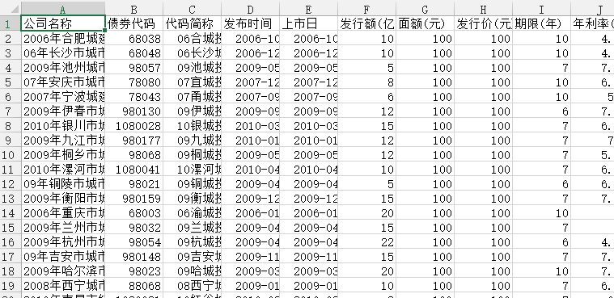

写论文需要数据，但是和讯网并没有提供数据的下载，所以就想着自己写个爬虫，以来看看自己能不能搞定这个爬虫，二来可以拿到数据。
话不多说，先来理下思路：
思路

这里面有261只债券，总共6页。最开始我是准备就爬这个页面的，但是发现提供的数据不够，点进去一只：

这才是我想要的。
所以现在就有了一个大致的思路：
1. 先爬第一个网页，取得所有城投债的链接；
2. 再解析每个网页，取得数据。
获得链接
打开网页，右键>检查：

链接就藏在a标签里面了，下面是代码：
def get_lianjie(url):
#定义一个函数
page_source=requests.get(url).content
bs_source=BeautifulSoup(page_source,'lxml')
bs_source2=BeautifulSoup(str(bs_source.find_all('tr')),'lxml')
report_text=bs_source2.find_all('a',href=True)
#用beautifulsoup解析网页
lianjie=[]
for a in report_text:
lianjie.append(a['href'])
lianjie=list(set(lianjie))
#去掉重复的
return lianjie获取表
接下来就是要获取每个链接里的数据了，还是要先分析网页，找到需要的数据在哪里，
代码如下：
def get_biao(url):
http=urllib3.PoolManager()
#不用这个好像网页会加载不完全，具体什么意思我也不懂。。
page_source=http.request('GET',url).data
soup = BeautifulSoup(page_source,'lxml')
text = soup.find_all('tr',align="center")
soup2=BeautifulSoup(str(text),'lxml' )
a=soup2.find_all('td')
#还是用beautifulsoup包解析网页
#然后将获取的数据做成dataframe
index=[]
iterm=[]
for i in range(0,len(a)):
if i%2==0:
index.append(str(a[i].get_text()).decode('unicode_escape').encode('utf-8'))
else:
iterm.append(str(a[i].get_text()).decode('unicode_escape').encode('utf-8'))
biao=DataFrame(iterm,index=index)
return biao合并数据
到这一步就很简单了，因为表都是DataFrame格式，代码如下：
data=pd.concat(biao,axis=1)
data=pd.DataFrame(data)
data.to_csv('data.csv',encoding='gbk')#注意编码，不然会乱码至此这个爬虫就差不多完成了，但是有个问题，就是：很！慢！
我点击运行，过了十几分钟才出结果，所以得用多线程优化一下，
下面是完整代码：
import requests
from bs4 import BeautifulSoup
import urllib3
from pandas import DataFrame
import pandas as pd
import threading
#加载所要用的包
def get_lianjie(url):
page_source=requests.get(url).content
bs_source=BeautifulSoup(page_source,'lxml')
bs_source2=BeautifulSoup(str(bs_source.find_all('tr')),'lxml')
report_text=bs_source2.find_all('a',href=True)
lianjie=[]
for a in report_text:
lianjie.append(a['href'])
lianjie=list(set(lianjie))
return lianjie
def get_biao(url):
http=urllib3.PoolManager()
page_source=http.request('GET',url).data
soup = BeautifulSoup(page_source,'lxml')
text = soup.find_all('tr',align="center")
soup2=BeautifulSoup(str(text),'lxml' )
a=soup2.find_all('td')
index=[]
iterm=[]
for i in range(0,len(a)):
if i%2==0:
index.append(str(a[i].get_text()).decode('unicode_escape').encode('utf-8'))
else:
iterm.append(str(a[i].get_text()).decode('unicode_escape').encode('utf-8'))
biao=DataFrame(iterm,index=index)
return biao
#获取全部261个链接
lianjie=[]
for page in range(1,7):
url= 'http://so.hexun.com/list.do?type=ALL&stype=BOND&key=%B3%C7%CD%B6%D5%AE&page={0:d}'.format(page)
page_lianjie=get_lianjie(url)
lianjie.extend(page_lianjie)
#获取所有的表
biao=[]
def one(url):
page_biao = get_biao(url)
biao.append(page_biao)
return
#多线程
threadlist=[]
for url in lianjie:
t=threading.Thread(target=one,args=(url,))
t.start()
threadlist.append(t)
for t in threadlist:
t.join()
#最后导出数据
data=pd.concat(biao,axis=1)
data=pd.DataFrame(data)
data.to_csv('data.csv',encoding='gbk')最终效果：
